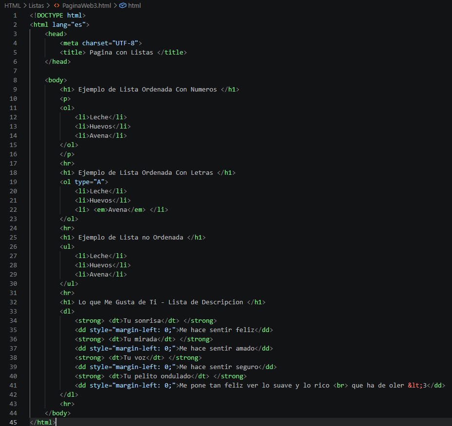
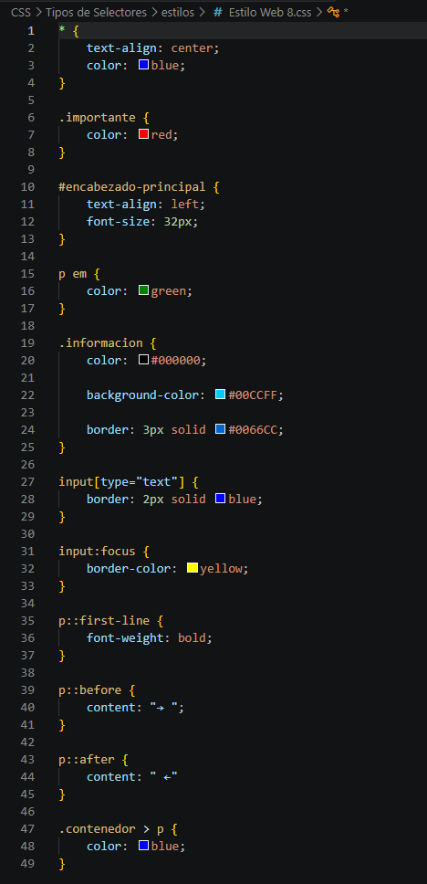
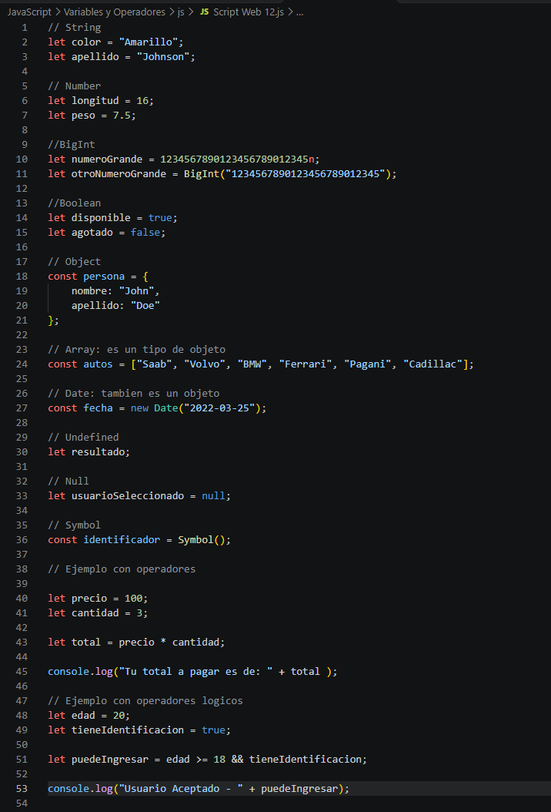

Mis Prácticas Web
Un recorrido por mis primeros ejercicios aprendiendo a programar:
1. Sintaxis HTML y Listas
En mis primeros pasos practiqué el uso de etiquetas básicas y listas de descripción (<dl>, <dt> y <dd>).

2. Sintaxis CSS y Estilos
Al momento de descubrir el lenguaje en CSS, supe que se podia hacer más que una simple página estática.
Con diferentes tipos de funciones para el color, diseño y animación.

Este código en CSS se lo apliqué a un archivo HTML distinto.
3. Sintaxis JavaScript y Validaciones
Mi primer acercamiento con el lenguaje fue directamente escribir script en el archivo HTML.
Después de eso ya comencé a separar los archivos de tal forma que fuese modular y fácil de acceder.

Este código en JavaScript se lo apliqué a un archivo HTML distinto.